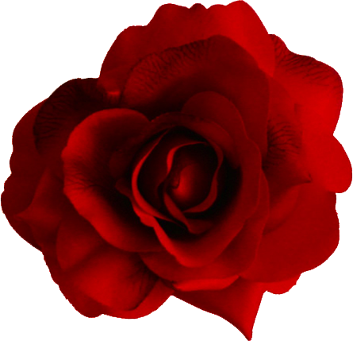

flor de cerezo
originaria de japon
La flor de cerezo es delicada y aromatica,tiene un color rosaseo

Gardenia
originaria de china
Su increible aroma y su color blanquesino la hace la faborita de muchos
Peonia
Originaria de Europa
Las peonia son munialmente famosas por sus bellos colores y agradable aroma
Flor de Durazno
Originaria de china
La flor de durazno es delicada y sus petalos muy finos pueden ser desde blancos a rosas y se tranforman en una deliciosa fruta

Rosa
originaria de asia
Aromaticas y hermosas son mundialmente conocidas para demostrar afecto